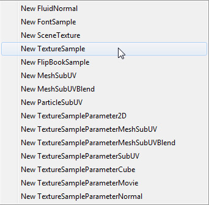

Flipbook Textures
Overview
Flipbook textures are special textures which provide the ability to cylce through a series of sub-images, similar to the way particle SubUV animations work in ParticleSystems. However, flipbook textures can be used in materials and applied to any surface in the world. These are a simple way to create limited animations inside of materials without the need for using movie textures (Bink movies).
 NOTE: Flipbook textures suffer the same problem as movie textures in that the same source flipbook texture will be in sync when used on multiple objects in a scene. There is a TTP to remedy this issue for flipbooks.
NOTE: Flipbook textures suffer the same problem as movie textures in that the same source flipbook texture will be in sync when used on multiple objects in a scene. There is a TTP to remedy this issue for flipbooks.
Importing Flipbook Textures
Flipbook textures are imported just like any other texture by pressing the Import button in the Content Browser. This will open the file browser where you can navigate to and select the texture you wish to import as a Flipbook texture. Once you have done so, the import dialog will appear. In the import dialog, check the 'Flipbook' option.
Once you have imported the flipbook texture in the Content Browser, it will display the standard texture size and format, followed by the dimensions of the flipbook. For example, when first importing a 256x256 texture as a flipbook, it would display "256x256[DXT1] 1x1".
After changing the dimensions in the flipbook texture's properties, the information in the Content Browser will update to reflect these changes.
For more information on importing textures, see the Importing Texture Tutorial.
Flipbook Texture Properties
Flipbook textures contain all of the properties of a regular texture with a few additions specific to flipbook textures. To open the properties for a flipbook texture, simply double-click on it in the Content Browser or right-click and choose Properties... from the context menu.
- HorizontalImages - The number of columns of 'sub-images'.
- VerticalImages - The number of rows of 'sub-images'.
- FBMethod - The method to iterate through the sub-images. The options for this property are:
| Option | Description |
|---|
| TFBM_UL_ROW | Start upper-left, go across to the the right, go to the next row down left-most and repeat. |
| TFBM_UL_COL | Start upper-left, go down to the bottom, pop to the top of the next column to the right and repeat. |
| TFBM_UR_ROW | Start upper-right, go across to the the left, go to the next row down right-most and repeat. |
| TFBM_UR_COL | Start upper-right, go down to the bottom, pop to the top of the next column to the left and repeat. |
| TFBM_LL_ROW | Start lower-left, go across to the the right, go to the next row up left-most and repeat. |
| TFBM_LL_COL | Start lower-left, go up to the top, pop to the bottom of the next column to the right and repeat. |
| TFBM_LR_ROW | Start lower-right, go across to the the left, go to the next row up left-most and repeat. |
| TFBM_LR_COL | Start lower-right, go up to the top, pop to the bottom of the next column to the left and repeat. |
| TFBM_RANDOM | Randomly select the next image. |
- FrameRate - The rate at which to flip through the images in frames per second, e.g. 4 would mean 4 images per second.
Using Flipbook Textures in Materials
In order to sample a flipbook texture within a material, a special material expression must be used. This expression is the FlipBookSample.
A FlipBookSample expression can be added to your material through the Material Expression pane of the Material Editor or by right clicking in the Material Editor and choosing Texture > New FlipBook Sample from the context menu.

If the flipbook texture is selected in the Content Browser when this is done, it will automatically be assigned to the new FlipBookSample expression. Otherwise, you can select the FlipBookSample and assign the flipbook texture to its Texture property using the button. Once assigned, you should be able to preview the flipbook animation assuming realtime preview is enabled in the Material Editor.
Important!
You are viewing documentation for the Unreal Development Kit (UDK).
If you are looking for the Unreal Engine 4 documentation, please visit the Unreal Engine 4 Documentation site.